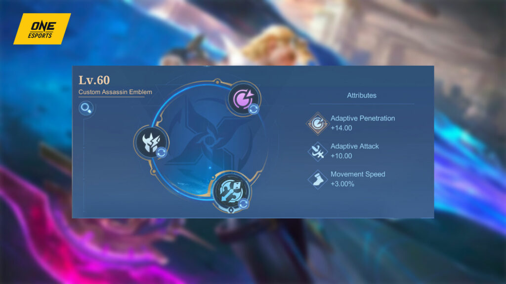

A comprehensive guide on how to play Nolan in Mobile Legends
Recommended battle spell
Credit: One Esports
The Cosmic Wayfarer is an excellent hero to use as a jungler because you can take advantage of his
low-cooldown abilities to take down jungle creeps fast, then regain energy in the process to do it all over
again. As such, Retribution is the best battle spell.
Specifically, get the Ice Hunter’s Retribution. Not only will this boost your camp-clearing abilities, the
blessing also allows you to steal 72 to 100 movement speed from your target depending on your level for a
couple of seconds, making you even more mobile while your enemies are hampered by slow effects.
Use this on mobile enemy mages or marksmen who are attempting to flee from fights. It can help you easily
chase them down to secure a crucial kill or escape from them when getting pursued.
Recommended emblem

Credit: One Esports
Nolan is incredibly strong in the early game due to his low-cooldown, high-damage abilities. When equipped
with talents that boost these strengths, his snowball potential jumps to another level.
Take the Assassin Emblem to get additional Adaptive Penetration, Adaptive Attack, and Movement Speed.
For your first talent, Rupture is the best option because the added Physical Penetration amps up your hero’s
camp-clearing, giving you more time to visit other lanes to gank.
Double down on your jungling speed by getting Seasoned Hunter as the second-tier talent. This increases the
hero’s damage against the Lord and Turtle, thereby making it easier to secure and contest objectives.
Finally, take Lethal Ignition as your main talent. This allows you to deal extra damage when you hit enemies
multiple times, further boosting your burst damage capability.
Nolan best build
Credit: One Esports
Aside from emblems, you can also snowball easily if you build the right items on Nolan. Mostly, you need to
increase your Physical Attack early to gank lanes and secure key pick-offs.
Get Blade of the Heptaseas as soon as you can. The item’s unique passive, Ambush, works similarly to Nolan’s
passive, Cosmic Leap, which enhances the next Basic Attack after not taking damage for a few seconds.
Continue building on your burst damage by purchasing Sky Piercer and Hunter Strike as you transition to the
late game.
By this stage of the game, enemy heroes will have bought Physical Defense items. Counter this by getting
Blade of Despair and Malefic Roar. Both items increase your kill potential against durable enemies.
You can also opt for Immortality as your final item to get a second chance in fights when you get eliminated
quickly.
The best build for Nolan in Mobile Legends
- Tough Boots
- Blade of the Heptaseas
- Sky Piercer
- Hunter Strike
- Malefic Roar
- Blade of Despair
Easy combos to learn
Nolan’s skills are straightforward, but to fully take advantage of his Dimensional Rift passive, you’ll need
to sequence his abilities properly and have his rifts make contact with one another.
The easiest combo to learn is the three-rift combo where you attack using Cosmic Leap, activate your first
skill, and quickly follow it up with the second skill.
This combo packs enough damage to delete squishy marksmen or mages on the battlefield, especially when Nolan
is equipped with the right Physical Attack items.
When chasing enemies or ganking lanes, you can execute his chase combo. Close the gap using Gauge, attack
using Cosmic Leap, then follow it up with Expansion. Continue the combo with another Gauge and Expansion to
burst the enemy down.